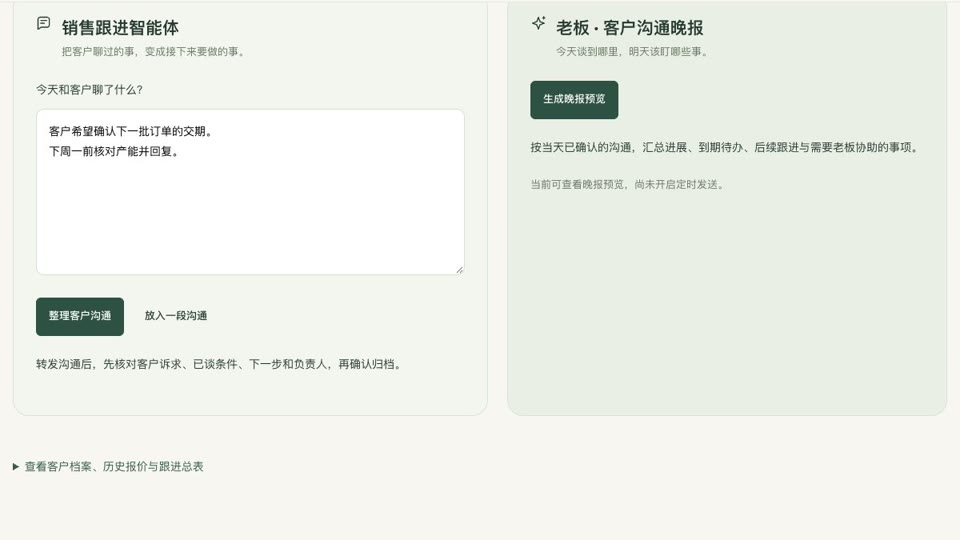

企业 AI 培训现场

带企业团队拿自己的业务问题上手练习，做出能试用的第一版。

我为传统企业提供 AI 培训和定制落地服务，帮助企业提高收益。
我做企业软件出身，习惯先到现场看业务怎么跑，再做出第一版让人试。我在中国民营企业 500 强公司、上市企业和创业团队做过产品，现在为传统企业做 AI 培训和定制落地。

信息管理与信息系统 · 本科
参与设计的燃气监管平台覆盖 41 家燃气公司，累计接入 105 万只气瓶的数据。
我最早做燃气和环保监管软件，也做产品推广和培训。做燃气监管时，我和监管人员、燃气公司及配送人员分别沟通，把出库、配送和入户的交接过程梳理清楚，再设计管理端、大屏和配送人员用的 App。我参与设计的燃气监管平台覆盖了 41 家燃气公司，累计接入 105 万只气瓶的数据。
从零规划设备资产管理产品，在通信、制药企业投入使用。市级工业互联网平台通过验收。
后来我负责规划设备资产管理产品。走访不同企业后，我发现大家都要做台账、盘点和巡检，具体表单和流程却各有一套。我和团队把共用的功能做进产品，把各家的差异留给配置。这款产品后来在通信、制药企业投入使用。
在市级工业互联网平台项目中，我走访制造企业和技工学校，参与设计企业运行看板、设备状态监测和校企人才培养功能，也负责准备演示和验收材料。项目通过验收并投入使用。
做设备接入和生产测试，也负责上线后的手册、培训和迭代。
在大型企业做物联网和生产系统时，我参与过现场设备接入、生产测试系统设计和上线后的迭代。上线以后，我写操作手册、组织培训，再把现场用起来遇到的问题带回下一版。这段经历让我把培训和反馈也当成产品工作的一部分。
走访不同产业，和企业一起做原型、试用工具，也把实践讲成课程和视频。
我陆续接触了酒店、外贸、电商和家居制造企业。有的项目从访谈和流程梳理开始，有的进一步做了原型、工具和试用。给企业做培训时，我也会带着实际问题让大家上手。我把项目里遇到的问题和做法讲成抖音视频，也在准备实战课，希望学员带着自己的业务问题来，能做出第一版并带回去试。
学行业研究、公司分析和财报阅读。
整理首次覆盖笔记，持续跟踪行业和公司。
写过半导体设备和海上风电装备公司分析，记录判断与待验证的问题。
带企业团队拿自己的业务问题上手练习，做出能试用的第一版。

用脱敏案例展示 AI 怎么帮销售、研发和生产团队减少重复工作，把时间用在客户、产品和交付上。
打开工作台把我做上市公司研究的流程做成了公开 Skill。复制提示词，交给 Codex 或支持安装 Skill 的 Agent。
想给团队做 AI 培训，或者有一个业务流程想用 AI 改一改，欢迎微信联系。